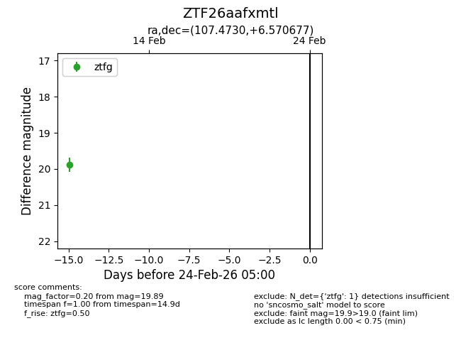
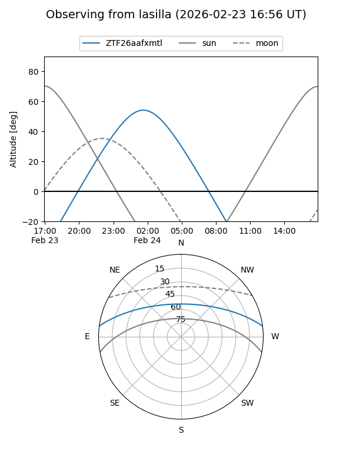
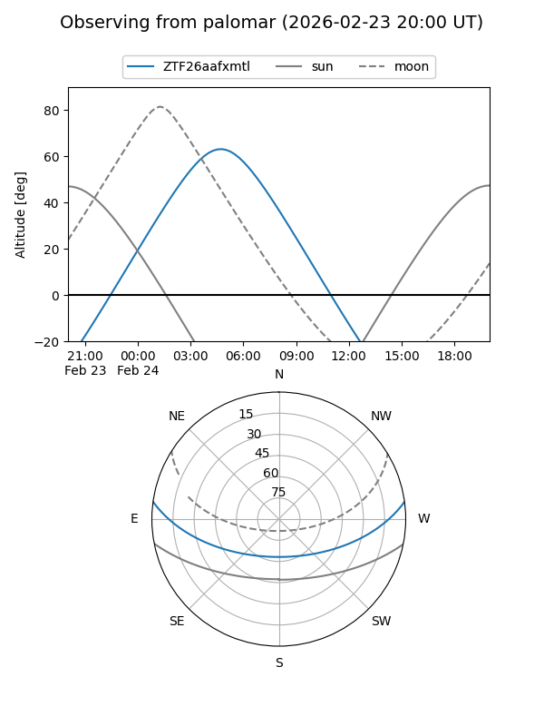

ZTF26aafxmtl
Target ZTF26aafxmtl at 2026-02-24 09:08
Aliases and brokers:
FINK: link
Lasair: link
ALeRCE: link
alt names
ZTF26aafxmtl (ztf,fink_ztf)
Coordinates:
equatorial (ra, dec) = 107.4730,+6.57068
equatorial (HMS+DMS) = 07:09:53.53,+06:34:14.44
galactic (l, b) = (209.1530,+7.08222)
Flags:
Photometry:
last ztfg=19.89
1 ztfg detections
Lightcurve

Visibility


Additional plots